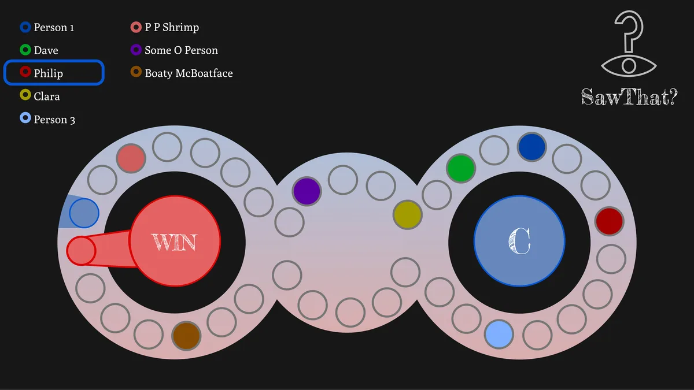
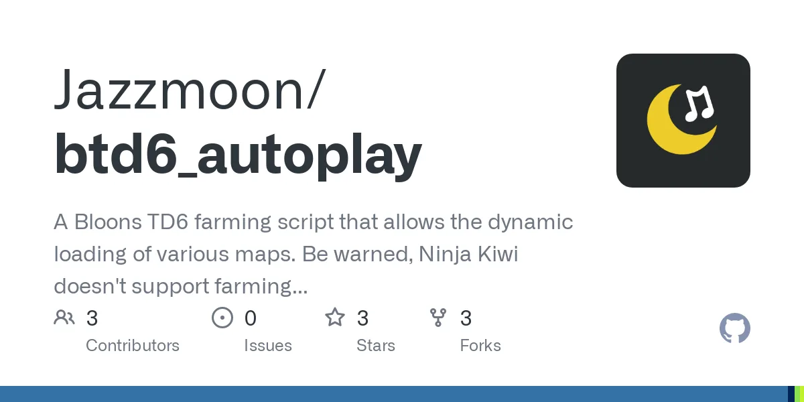
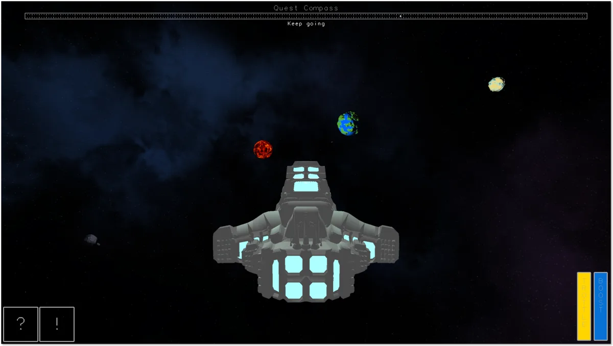
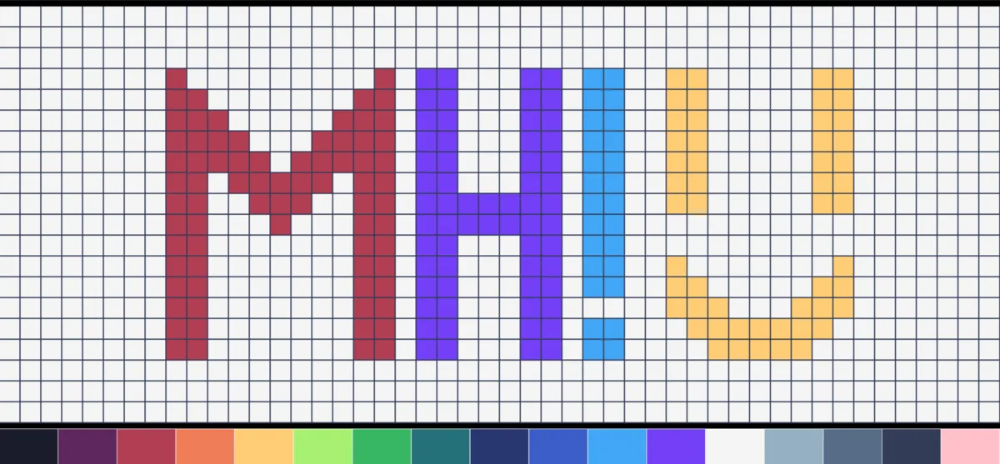
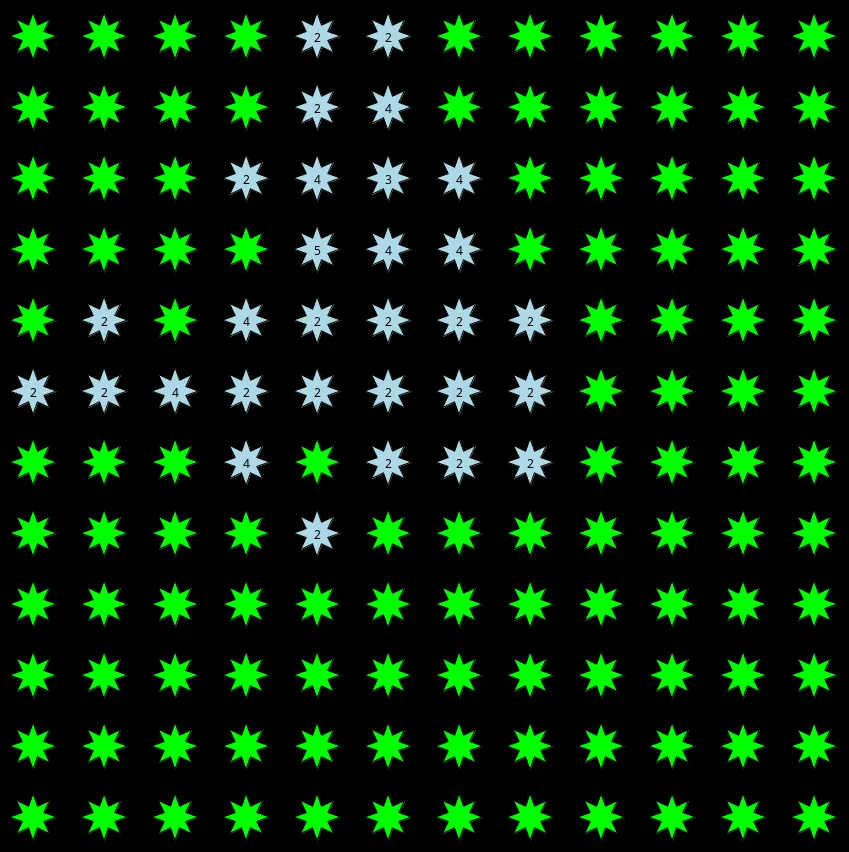
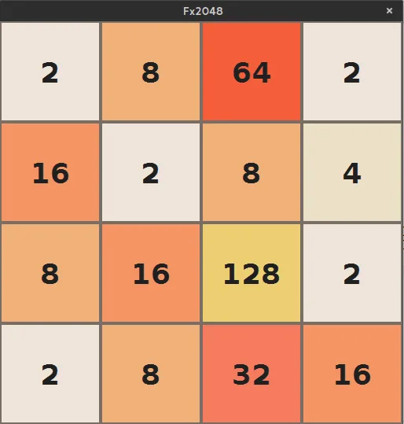
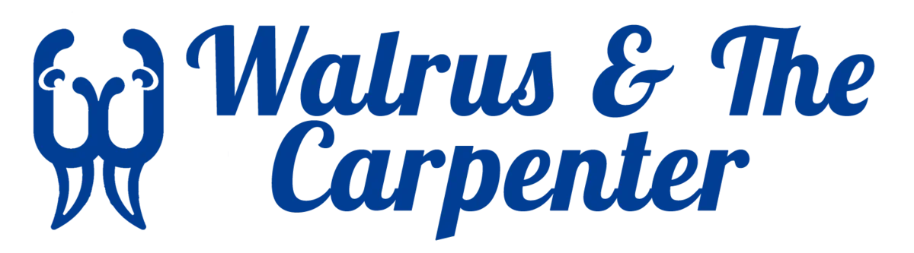

2019 — 2023
Bachelor of Applied Science, Computer Science
McMaster University · Hamilton, ON
Four years of undergrad, most of it during the COVID-19 pandemic. Tough at times, but a lot of fun — and where I started teaching.
Mark Hutchisonlinkedin.com/in/mark-j-hutchison · github.com/MoonstarCoding
Design Engineer at Martinrea · Ontario, Canada
McMaster Computer Science alumnus building web applications end to end, from the database schema to the UI. I lean towards the back end — APIs, databases and the infrastructure under them — but I'm happy anywhere in the stack, and I love mentoring the people around me.
01 — About
I'm a McMaster University Computer Science graduate who has been writing code since long before university. I love the web — front end and back end — but given the choice I'll always reach for the back end, because I enjoy the logic of designing systems that are correct, fast and easy to reason about.
Today I'm a Design Engineer at Martinrea, where I work across React, Python and C++ as well as the infrastructure underneath: Proxmox, PostgreSQL, Redis and plant-floor networking. Along the way the role has grown into teaching, mentoring and leading as much as writing code.
Outside of work you'll find me at tech conferences, museums, conventions, or putting together a costume. I try never to lose sight of the community around me, both in what I build and in what I do.
Go (Echo), Python (Django), Node.js (Express, Fastify), C# and C++ services.
React, Next.js, Svelte and Angular; Tailwind and shadcn/ui; server templates like Blade and htmx.
PostgreSQL, MySQL, SQLite, MongoDB and Neo4j. REST APIs, GraphQL, WebSockets and WebTransport.
Plant-floor networks, server hardware, virtualization and Linux sysadmin work alongside development.
02 — Experience
– Present
Joined through the McMaster alumni network to build an internal software platform with a close friend. The work spans React, Python and C++ on the application side and Proxmox, PostgreSQL and Redis underneath. Martinrea has been challenging and rewarding, and has grown my skills as a teacher, mentor and leader as much as a developer.
–
My first role after graduating. Built features on a platform handling sensitive data, using Angular on the front end, C# on the back end and in-depth SQL for the data layer.
–
TA from second year onward. For two and a half years on CS1MD3 — Introduction to Programming in Python I managed the course server, generated ideas for tests and exams, and made sure no student question on Piazza or Discord went unanswered. In my final semester I moved to CS2DB3 — Databases, teaching tutorials and grading assignments.
–
Hired as a Go back-end engineer and grew into a full-stack role, picking up Vue and React along the way. Also built a Laravel project with Blade templates, broadening my toolkit further.
–
Designed, built and maintained affordable websites for members of the local community. Worked directly with clients and handled everything from Cloudflare DNS and domain registration to Linux server administration.
–
Balanced customer-facing responsibilities with regular crew duties, including the extra COVID-19 measures. Built multitasking and communication skills I still use every day.
03 — Skills
Rated by how much I've actually shipped with each one: from tools I know well enough to evaluate, up to the ones I use every day. I pick up new technology often, so this list keeps growing.
04 — Education
2019 — 2023
McMaster University · Hamilton, ON
Four years of undergrad, most of it during the COVID-19 pandemic. Tough at times, but a lot of fun — and where I started teaching.
2015 — 2019
Acton District High School · Acton, ON
Took every information technology course on offer and graduated with a Specialist High Skills Major (SHSM). Also where I competed in Skills Canada.
05 — Projects
A few personal and academic projects. More on GitHub.

McMaster capstone: a modern take on the Scene It? DVD trivia game, with a Go back end running the game over WebSockets.

Started as a small Python image-recognition script to play a game; grew into my introduction to Rust and OCR models.

C++ / OpenGL piloting simulator with procedurally generated planets, asteroids and quests, built for a computer graphics course.




A website built in two days for the Skills Canada national coding competition.
06 — Beyond the code
Conferences, museums and the odd costume. Click a photo to enlarge.
07 — Contact
Open to interesting problems, collaborations and a good tech conversation. LinkedIn is the best way to reach me.